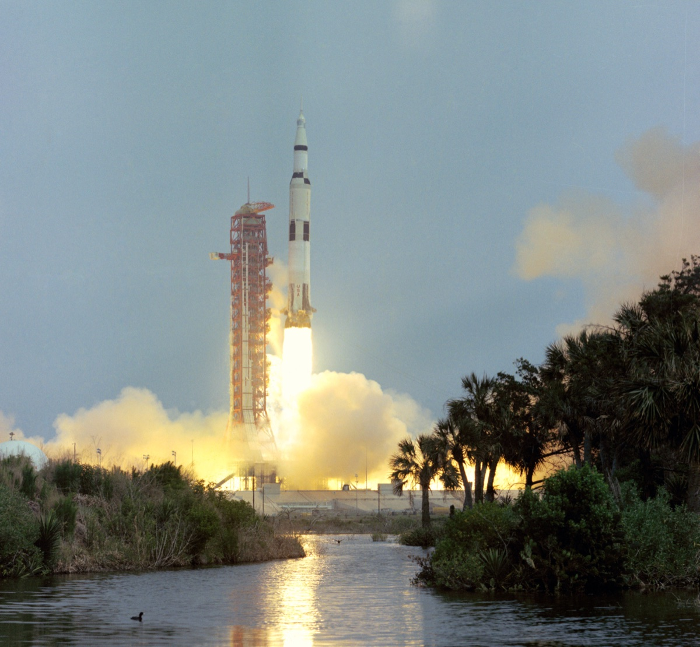

Launch & Mission Overview

The Mission
On April 11, 1970, three astronauts climbed aboard Apollo 13 with one goal: land in the Fra Mauro highlands on the Moon and return safely to Earth. The mission was planned for 10 days.
At 2:13 PM Eastern Time, the massive Saturn V rocket roared to life, carrying Jim Lovell, Jack Swigert, and Fred Haise toward the Moon. It was the seventh crewed mission in the Apollo program, and the third planned lunar landing.
Ten days. A Moon landing. A well-tested rocket. ❓ What could possibly go wrong?
Launch Day
- GET 00:00:00 — Liftoff from Pad 39A, Kennedy Space Center. (GET is Ground Elapsed Time — the mission clock. It starts at zero at liftoff and counts up in hours:minutes:seconds; you'll see it throughout this story.)
- GET 00:05:30 — Trouble already: violent "pogo" vibrations — the rocket bouncing along its length like a pogo stick — shut down the second stage's center engine more than two minutes early. The other four engines burn longer to compensate, and Apollo 13 still reaches Earth orbit safely. This mission survived an engine failure on the way up, too.
- GET 02:35:46 — Trans-Lunar Injection (TLI). After about one and a half orbits of Earth spent checking every system, the third stage reignites and sends Apollo 13 on course for the Moon. Everything is nominal — NASA-speak for "all normal, exactly as planned." A smooth flight lies ahead—or so they thought.
Meet the Crew
- 👨🚀 Commander Jim Lovell — Navy captain on his fourth spaceflight; he already orbited the Moon on Apollo 8.
- 👨🚀 Command Module Pilot Jack Swigert — civilian test pilot swapped in from the backup crew just days before launch, after Ken Mattingly was exposed to German measles (rubella).
- 👨🚀 Lunar Module Pilot Fred Haise — former Marine Corps fighter pilot and NASA civilian test pilot; he was set to walk on the Moon at Fra Mauro.
You'll meet all three properly aboard the lifeboat — full introductions coming on the "Meet the Crew" slide.
The Journey Begins
Day 1-2: Routine cruise to the Moon. All systems checks come back green. The crew performs a TV broadcast for the public. Their trajectory is adjusted to aim for the Fra Mauro landing site.
⚠️ Critical Note: To aim for Fra Mauro, Apollo 13 was taken off the free-return trajectory—a path that would automatically loop around the Moon and return to Earth. This decision would become crucial in 56 hours.
Learn More About the Saturn V Rocket
The Saturn V remains the most powerful rocket ever built. Standing 363 feet tall (equivalent to a 36-story building), it weighed 6.2 million pounds fully fueled. The first stage alone burned 203,400 gallons of kerosene plus about 318,000 gallons of liquid oxygen — over 500,000 gallons total — in about 2.5 minutes, producing 7.5 million pounds of thrust.
The Saturn V flew 13 times — 12 Apollo missions plus the Skylab space station — without ever losing a payload or a crew. Even the pogo vibrations that shut down one engine on Apollo 13 couldn't stop it from reaching orbit.
Mission Status
✅ Launch: Success
✅ Trans-Lunar Injection: Success
✅ Course to Moon: On track
⏳ Fra Mauro landing: Still planned
So far, everything by the book. Next: a tour of the spacecraft — you'll want to know your way around it.